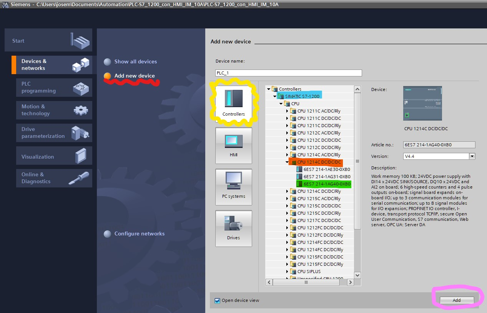
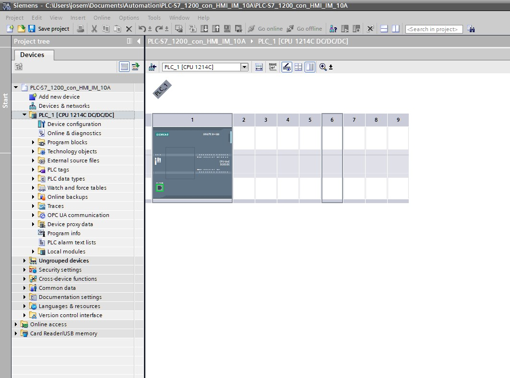
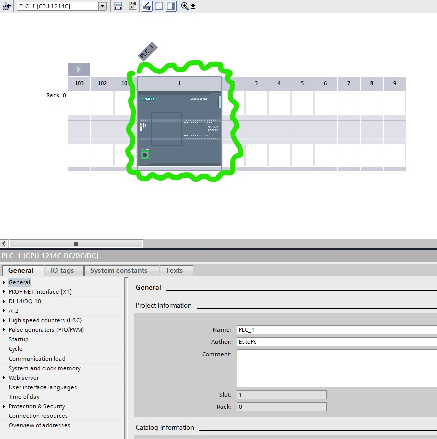
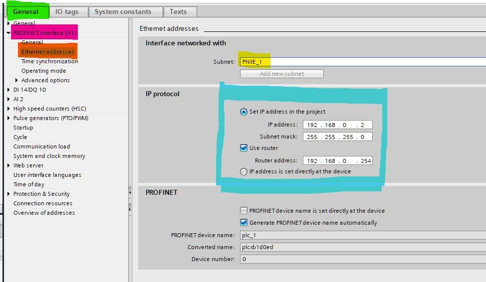
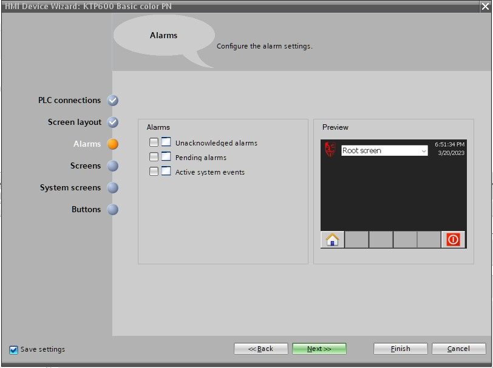
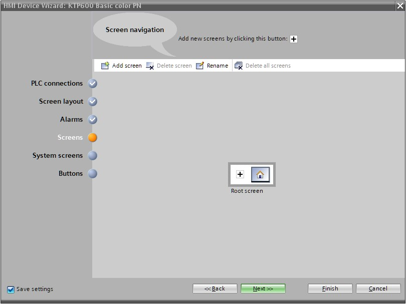
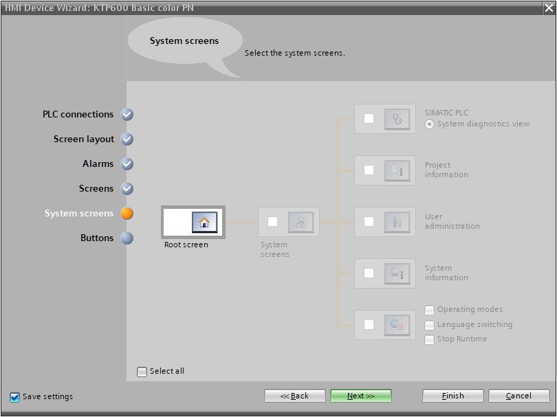

Acerca de los autores de esta guía.
Los autores de la escritura de esta guía a la fecha de hoy 20 de marzo del 2023 son estudiantes de la carrera de ingeniería de Mecatrónica en el ITSZ:
— Alondra Molina Sánchez
— Francisco Javier Guerrero Guzmán
— Julian García García
El evaluador de esta guía M.E.M. José Ramiro Ramiro quien funge sus activiades como profesor en el Instituto Tecnológico Superiór de Zacapoaxtla al presente año 2023.
Introducción
Esta guía es un resumen de las actividades que se estuvieron realizando como prácticas del tema 2 de la asignatura de Instrumentación y Control Industrial en la carrera de ingeniería Mecatrónica en el ITSZ y fue realizada en base al ejemplo video-tutorial mostrado en el siguiente link:
El video-tutorial fue llevado a cabo en esta práctica titulada Configuración HMI-PLC1200 y durante los siguientes capítulos se describe detalladamente los pasos realizados para concluir con el resultado final de la comunicación de un HMI-PLC-PC.
Acerca de las herramientas ocupadas para esta guía.
El presente libro fue realizado con una herramienta de línea de comandos de nombre mdbook para crear books con un lenguaje llamado markdown. mdbook ofrece fácil sintaxis para realizar documentación de código como lo es python y otros lengujes. Esta es un herramienta de línea de comandos escrita en un lenguaje de programación de sistemas de nombre Rust y es ampliamente usada para el ambito de documentación.
Posteriormente a la construcción del libro en mdbook este reescribe el código a HTML, CSS y Javascript para poder visualizarlo en el navegador. Finalmente se utilizó la plataforma Git-Hub para desplegar el código en la red de forma segura.
El código fuente resultante se encuentra en el línk código fuente, donde permanecerá abierto al público para los fines que convengan.
0. Configuración IP y enlace físico
Uno de los primeros pasos para realizar esta práctica consiste en realizar la configuración IP de un computador así como la comunicación fisica entre dispositivos como lo son HMI, PLC:
Para ello se utilizaron los siguientes elementos:
- Swicheador
- PLC S7-1200 (SIEMENS)
- Pantalla HMI KTP600 Basic color PN
- Computador (Preferentemente Portatil)
Cada una de la especificaciones son relevantes ya que se configurarán con el programa que se debe cargar al dispositivo. Tenga en cuenta las especificaciones de su PLC y HMI que en muchas ocasiones la información se encuentran al reverso del dispositivo o en alguna parte visible de el.
Una vez conectado todo el dispositivo, identifique la dirección de su PLC, HMI para posteriormente asignar una dirección IP estatica a su PC, esto con la finalidad de poder concretar una línea de comunicación reconocible en todo momento para con su PLC.
Nota: El puente entre todos los dispositivos será su
Swicheadorpor lo que tenga en cuenta que no debe desconectarlo en ningún momento.
Su Swicheador se comunica a través del puerto SRJ45 donde el cableado es tipo UTP para la comunicación entre Swicheador-Computador. El tipo de cable debe estar regido por la norma TIA/EIA 568B o TIA/EIA 568A que forman un enlace recto en su protocolo de comunicación.
0.1. Configuración IP del PC
- Dirijase a su centro de redes y recursos compartidos, en las que para versiones de
Windows 11puede insertar la siguiente dirección en su explorador de archivos:
Panel de control\Redes e Internet\Centro de redes y recursos compartidos
Esto abrirá la ventana donde deseamos concretar una configuración con una red alámbrica (encerrado en color rojo).

- Presione en las letras azules que para el caso de la imagen anterior es
Ethernet 6. verá una ventana de estado de esa red como la siguiente:
- Pulse sobre el botón de propiedades y conceda los permisos necesarios para poder abrir la siguiente ventana en la cual clickeará dos veces sobre la opción
Habilitar el protocolo de Internet versión 4 (TCP/IPv4):

-
Al abrir las propiedades
TCP/IPestablezca una configuración similar a la siguiente, donde:- Dirección IP: es establecida por usted teniendo en cuenta que no debe ser igual a otras redes con las que esté en comunicación en el
Swicheador. - La Mascara de Subred: la proporciona la interfaz, aunque por si acaso puede colocar
255.255.255.0tal como en la imagen de abajo. - Puerta de enlace: no es nada mas y nada menos que la dirección del Swicheador.
- Dirección IP: es establecida por usted teniendo en cuenta que no debe ser igual a otras redes con las que esté en comunicación en el
- Corrobore si su dirección
IPha realizado un enlace exitoso ejecutando el siguiente comando enPowershelloCMDde acuerdo a la direcciónIPque proporcionó:
ping 192.168.0.211
En respuesta positiva encontrará una respuesta como la siguiente:
Haciendo ping a 192.168.0.211 con 32 bytes de datos:
Respuesta desde 192.168.0.211: bytes=32 tiempo<1m TTL=128
Respuesta desde 192.168.0.211: bytes=32 tiempo<1m TTL=128
Respuesta desde 192.168.0.211: bytes=32 tiempo<1m TTL=128
Respuesta desde 192.168.0.211: bytes=32 tiempo<1m TTL=128
Estadísticas de ping para 192.168.0.211:
Paquetes: enviados = 4, recibidos = 4, perdidos = 0
(0% perdidos),
Tiempos aproximados de ida y vuelta en milisegundos:
Mínimo = 0ms, Máximo = 0ms, Media = 0ms
- Siguiendo con el mismo comando, compruebe su comunicación con la puerta de enlace, tal como:
ping 192.168.0.254
Si existen otros dispositivos conectados, pruebe con la dirección de ese dispositivo.
En el siguiente paso se realizará un proyecto en el software TIA PORTAL V16.
1. Creación de un nuevo proyecto en TIA PORTAL V16
Abra Tia Portal y cree un proyecto nuevo con el titulo que usted desee, en este caso tiene el nombre de PLC-S7_1200_con_HMI_10A,

una vez que ha sido creado su proyecto probablemente se actualice su ventana en la siguiente vista,
Esto indicará que su proyecto ha sido creado exitosamente
En el siguiente capítulo se realizará la selección de un PLC así como la configuración en TIA PORTAL V16.
2. Selección de PLC y configuración de dirección IP
2.1. Selección de PLC
Dirijase al botón de dispositivos y redes de su proyecto, si su software se encuentra en inglés seleccione Devices & networks,

Siga los siguientes pasos:
- Seleccione
Add new device(Añadir nuevo dispositivo) como en la imagen que se encuentra subrayado en color rojo. - Seleccione
Controllers(controladores) tal como en la imagen que se encuentra encerrado en amarillo. - Abra la carpeta
SIMATIC S7-1200. subrayado en color azul. - Despliegue la carpeta de CPU.
- Abra la carpeta
CPU 1214CDC/DC/DCque se encuentra subrayada en color Naranja. - Seleccione el dispositivo
6ES7 214-1AG40-0XB0enmarcado en color verde. - Oprima el boton encerrado en color rosa.

Al finalizar la selección de su dispositivo puede dar un primer vistazo de su PLC en su ventana principal,

2.2. Configuración de dirección IP del PLC
Lo siguiente será configurar la dirección IP del PLC con los siguietnes pasos
- Seleccione el PLC (clickeando sobre la interfaz del PLC), tal como en la imagen (el icono encerrado en verde):

como resultado se desplegarán una serie de opciones en la parte inferiór.
- Selecciona la pesataña de
General(enmarcada en verde en la imagen inferiór). - Una serie subopciones son desplegadas, selecciona la opción que dice
PROFINET interface [x1](remarcada en rosa). - Selecciona la configuración de
Ethernet addresses(enmarcada en naranja). Esto mostrará un centro de configuración a su derecha con algunas opciones. - En el recuadro de
Interface networked with(Interfaz conectada en red con), añada una subredPN/1E_1(enmarcada en amarillo) en el comboboxSubnet. - En el recuadro
IP protocol(encerrado en color azul) complete los campos de acuerdo a su configuración física de PLC, swicheador:- inserte la dirección IP del PLC en el campo de
IP address. - coloque la mascara de subred en el campo de
subnet mask. - coloque la dirección del router (swicheador) en el campo de
Router address.
- inserte la dirección IP del PLC en el campo de

En el siguiente capítulo se empleará la selección de un dispositivo HMI en TIA PORTAL y explicará como se configurará la interfaz en la pantalla.
3. Selección de HMI y primeros pasos de configuración
3.1. Selección de HMI
- Dirijase a la ventana de dispositivos (
Devices) y seleccione el botón deAdd new device(enmarcado en color azul).
Se abrirá una nueva ventana con varias opciones para añadir nuevos dispositivos en su programa.
-
Seleccione el botón
HMIenmarcado en color verde, despliegue la carpetaHMIque se muestra en el recuadro de carpetas; seleccione y despliegue la subcarpetaSIMATIC Basic Panelenmarcada en color rosa. -
Seleccione la carpeta de panatalla de 6 pulgadas (
6" Display) enmarcada naranja, Despliegue la carpeta de dispositivosKTP600 Basicy seleccione el dispositivo6AV6 647 -0AD11 -3AX0ambos enmarcados en la imagen en color amarillo. -
Presione el boton
Oky con eso finaliza la selección de su dispositivo.

En consecuencia se desplegará una nueva ventana que le preguntará acerca de la configuración que desea hacer para su HMI
3.2. Configuración inicial de HMI
Durante su configuración de su HMI siga los siguientes pasos para aplicar las especificaciones pertinentes.
- Como primer paso le preguntará si conectará su HMI a un PLC, usted debe seleccionar el botón de
Browsersenmarcado en color amarillo en su imagen, por consiguiente debería aparecer el PLC que ocupo en el capitulo selección de plc, que en este caso aparece comoPLC_1el cual se encuentra enmarcado en la imagen en color azul. Posterriormente finalice esta acutalización presionando el botón deNext>>de su ventana para pasar al siguiente paso.

- De formato de color y algunas características a su interfáz de ventana raíz, en el caso de la imagen se añadió un ícono con el botón de
Browsersencerrado en color azul y se selecciono un color de fondo oscuro con el botón de color encerrado en color verde. Nuevamente al terminar esta configuración presione el botón deNext>>para continuar con los pasos.

- Desactive las alarmas, para este caso las opciónes de check-buttons deberian estar desmarcadas ya que para esta práctica no son necesarias. Continue al siguiente paso con
Next>>.

- Asegurese de que la configuración de
Screenssolo esté añadido el íconoRoot screeny solo este la ventana raíz. Siga conNext>>.

- Omita este paso ya que no vamos a conectar la vista
Root screena ninguna configuración especial. Asegurese de que su configuración se encuentre como en la imagen siguiente. Cuando haya configurado correctamente, prosiga conNext>>.

- Asegurese de tener añadidos el boton de
Home(Icono de casa) y el deDisconect(Icono de apagado de la pantalla) a su interfáz de pantalla. Presione enFinishpara finalizar con la configuración.

Al finalizar toda la configuración de su HMI podrá ver una vista similar a la de la imagen siguiente; y en su árbol de carpetas de dispositivos encontrará que se ha añadido una carpeta con el nombre de
HMI_1 [KTP600 Basic color PN]

El proximo capítulo se realizará el programa que ejecutará el paro y ejecución de un motor asignando direcciones del PLC que conformarán la respuesta entre HMI-PLC.
4. Creación de Programa LD
4.1. Definición de variables para el programa en LD
- Dirijase al arbol de carpetas del proyecto y despliegue la carpeta del dispositivo
PLC [CPU 1214C DC/DC/DC], encuentre la acciónAdd new tag table(enmarcado en color azul) y presione enter sobre ella.

- Lo siguiente que verá es que se ha creado un nuevo archivo
Tag table_1 [0], de click sobre el para abrirlo.

-
En el centro de trabajo de variables de su software se despliega una tabla donde se pueden anexar varaibles.
-
Añada una variable de nombre
arranqueque alamacene un tipo de datoBoolcon la dirección%I0.0. -
Añada una variable de nombre
paroque almacene un tipo de datoBoolcon dirección%I0.1. -
Agregue una última variable con nombre
motorcon tipo de datoBoolcon dirección%Q0.0 -
Asegurese de que de las siguientes checkbox de cada una de las variables se encuentren enmarcadas, tal como en la imagen posterior.
Accessible from HMI/OPC UA/Web APIWritable from HMI/OPC UA/Web APIVisible from HMI/OPC UA/Web API
-

4.2. Construcción del Programa en lenguaje LD
-
Para construir su programa en lenguaje
LDsiga los siguientes pasos.-
Dirijase a la subcarpeta
Program blocks(enmarcado en azul en la imagen inferiór) donde se encuentra su dispositivo PLC y seleccione el archivoMain [OB1](enmarcado en color naranja). -
En area del programa
Main [OB1]construya un programa como el mostrado en la imagen siguiente.
-
4.3. Definición de variables para el programa en HMI.
-
Añada una nueva tabla de varaibles, tal como lo hizo en la sección 4.1. Definición de variables para el programa en LD; esta vez se dirigirá al dispositivo HMI del arbol de archivos del proyecto y seleccione la acción
Add new table(enmarcada en azul en la imagen posterior); dirijase a su archivo que acaba de crear, en este caso le hemos nombradoTabla de variables_1 [3]y está remarcada en verde. -
Confeccione su tabla de variables en el archivo
Tabla de variables_1con los siguientes nombres y especificaciones:Variable_HMI_arranque: Asegurese de que esté conectada a la bandera de PLC de nomobrearranqueen la opciónPLC tagy anexe le dirección%I0.0en el campo deAddress.Variable_HMI_motor: El campo dePLC tagdebe tener la variabemotory el campo deAddressla dirección%Q0.0.Variable_HMI_paro: El campo dePLC tagpara esta variable debe tener la variableparoy el campor deAddressla dirección%I0.1.
-
Asegurese que cada una de estas varaibles sea un tipo de dato
Bool, el campo deConnectionesté vinculado alHMI_Conexión_1; elAcces Modetenga el valor<absolute mode>; el camp deAcquisition cycletenga de valor \(100ms\)

Una vez finalizado el programa, se agrega la parte interactiva del usuario como botones y colores de las escenas de pantalla en el HMI que interactuarán con el usuario.
5. Creación de interfaz HMI
5.1 Creación y edición de ventanas de interfaz HMI
- Dirijase a su arbol de proyectos y despliegue la carpeta de HMI, Despliegue la carpteta de
Screens(enmaracada en color naranja) y presione le botónAdd new screen(enmarcada en color verde); posteriormente modifique los nombres de cada uno de los archivos que ha creado. La ventana raiz se le ha a recibido el nombre deimagen raiz; las otras dos cualesquiera recibe una el nombre dearranqueyparoy la otramenu.

- Siga los siguientes pasos para añadir botones a su interfaz con interactividad entre ventanas:
- Abra su archivo
imagen raiz(enmarcada en color amarillo) - En el panel de
Toolboxarrastre el icono de botón (encerrado en azul) y arrastrelo a su pantalla. - En el panel de coonfiguración que se encuentra en la parte inferior de su programa puede seleccionar propiedades para añadir un icono si usted gusta o u texto.
- Dirijase a la ventana de eventos (encerrada en color verde) y en las seleccione la opción de
Click. - Seleccione un evento llamado
ActivateEventy en el campo descreen nameselecciones la ventana demenuque ya ha creado con anterioridad.
- Abra su archivo

- Usted puede modificar de forma similar la ventana de
menuy añadir el titulo deArranque y paroa su botón. No olvide añadir un botón más para regresar a la ventana raíz.
- Añada 4 botones a la ventana de
arranqueyparo, dos para actualizar el estado de arranque y paro, uno para regresar a la ventanamenuy otro para regresar a la ventana raíz (imagen raiz); Anexe un elemento de circulo que fungirá como indicador cuando el motor esté encendido o apagado.

5.2 Configuración de botones de arranque-paro en interfaz HMI
- Seleccione el botón verde y en la parte inferiór dirijase a los eventos del mismo elemento, seleccione la opción
Pressy le mostrará una lista para agregar eventos, busque la opciónSetBity agregue aTag (input/outputel valor deVariable_HMI_arranque.
Realice pasos similares en la opción de Release, seleccione la acción como ResetBit y agregue a Tag (input/output el valor de Variable_HMI_paro.
- Realice pasos similares para el botón rojo (paro) de acuerdo con las siguientes imagenes.
- Finalmente configure en
animationsy en el árbol de opcionesAppearancecomo se muestra en la siguiente imagen.